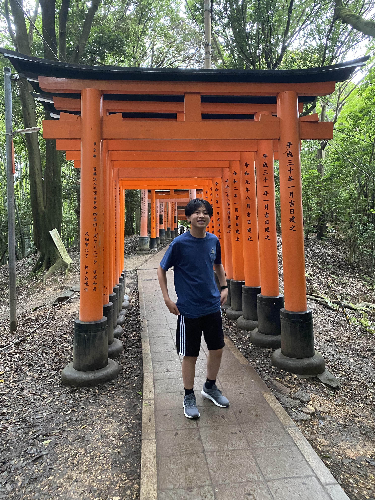
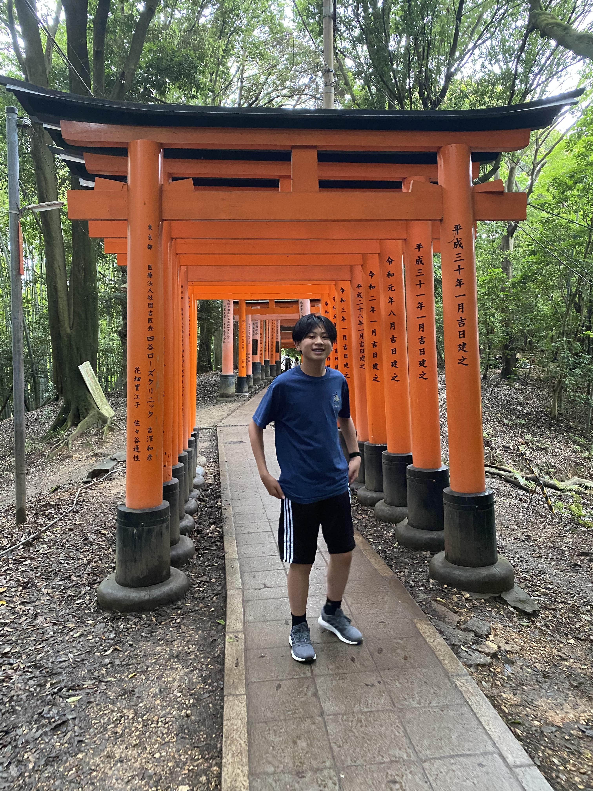

Contact Info
Email: dylanchiu713@gmail.com
Phone Number: 925-884-4049
About Me
 

I am Dylan Chiu. I am respectful, hard-working, and a leader.
In my fourteen years of life, I have had many dreams of what my future could end up looking like. Growing up, my parents had me
play soccer. In my point in life, I still have an extreme love for soccer and look forward to continue playing in high school and
one of my closer goals is to also play for a college team. When I get older, I also have a lot of career dreams. One of my bigest
dreams is to be a video-game developer. It always fascinated me how a team could develop a game because it always seemed so impossible
to do it. However in the last couple years, my dream seemed more and more realistic and my dreams are growing each day.
Skills and Characteristics
Through school and all my extra-curriculars, I have learned to be a leader and a team-player. Through sports such as soccer and
cross country, it has helped me become more talkative, friendly, and respectful to everyone I have met. It helps me more than ever because in
most of my classes, collaboration is the key to success. Especially in classes where group projects are very common, I have learned many
leadership skills and responsibilites to help the environment such as the CSE class, along with learning that you must have teamwork with
your partner, tablemates, and class in order for everyone to be able to grow together.
Important Achievements
Although we have only gone through a semester at Emerald High, I feel like I have been enrolled here for years. All the people I
meet are so friendly and I feel like I have done so much in such a short amount of time. I have worked on many projects for CSE and I
have seen many issues. But it has always worked out in the end through never giving up and perseverance. I have also worked on creation
of multiple clubs and am trying to get them chartered. Through all these experiences, I have learned to never give up and always keep growing
no matter how hard the task may be.
Conclusion
In conclusion, I thank you for reading through this and appreciate your time. I enjoy meeting new people and having the oppurtunities
to make new friends. My years here at Emerald High are going to be amazing and I hope to make more friends along the way.
Through tough challenges and hardships, I have learned to endure through it and grow in the end. Thank you again for your time and please
check out the rest of my website!